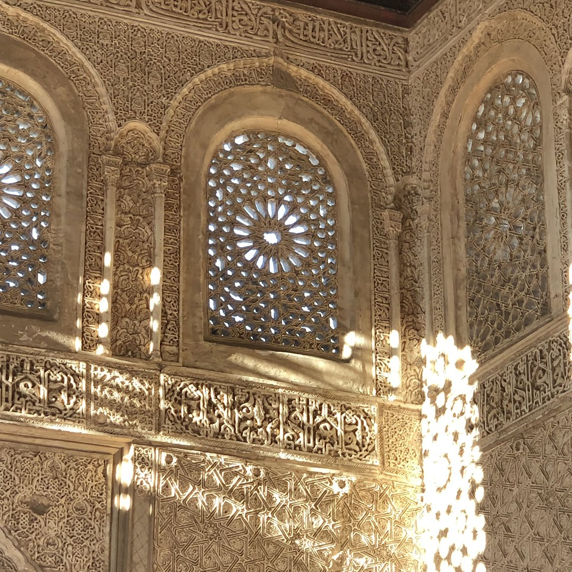

The climbing journey
What is it that attracts people to bouldering & climbing? At first glance the allure seems obvious: the physicality, the rush of accomplishment, and the tight-knit community all play their part. What more do you need? Yet, one aspect often goes unnoticed when discussing its attraction: personal growth.
As you embark on the climbing journey, you won’t notice it at the beginning, but a seed is planted within you. It takes root and begins to grow, evolving from a mere seedling to a mighty tree through nurturing and practice. It is the mentality you bring to life. Climbing continually pushes you beyond your limits, challenges you at every turn, and forces you out of your comfort zone. It presents you with new obstacles to overcome and conquer. What is it, if not an analogy for life?
If you read this, you probably know me. I like to think, grow, and reflect. Let me give you a window into my world. This is a series of posts where I will reflect on my personal journey. Welcome to When you cannot stop.
You can do it
One of the best visual representations of exploring your limits and not stopping. It seemed impossible to climb the Dawn Wall but Caldwell and Jorgeson found a way.
This video remains etched in my memory. Watching this awe-inspiring feat makes my palms sweat and my body tense. How does one begin an endeavour everyone deems unattainable? What fuels the relentless attempts year after year, the refusal to surrender to defeat? For a long time, this fuelled my quest to explore my own limits in life. But today, I don’t wish to discuss the familiar you can do it mantra—akin to profit-driven companies assuring success upon purchase. I want to unveil the less discussed, the harmful side.
Have you ever felt like a train hurtling along tracks, station to station? But then, you decide you want to be more than just the rhythm of the rails. You want to go faster. It‚Äôs that inkling, that curiosity to glimpse the next stop or the desire ignited by the journeys of other trains. Yet, as your speed increases, inevitability rushes in ‚Äî some stations will be missed. And there‚Äôs an even subtler twist, the possibility of not even regretting those skipped stations. üõ§Ô∏èüöÇ
Lively August
Throughout the lively August 2022, my weekends were brimming with adventure. I finished the Rotterdam half-marathon. I went climbing in Berdorf, Freyr, and Pont-A-Lesse the following weekends after. Weekdays blurred into a medley of running, climbing, swimming, and, of course, work. I was hooked to the outdoor active lifestyle. At work, I had three amazing projects which I had to bring over the finish line still. This phase, the amazing feeling of conquering the summer run, the thrill of climbing, the joys of camping, and trying to contribute to my city came with a price. I was sprinting past my limits, carried away by my enthusiasm. All the achievements masked a subtle truth: I had done too much, too fast.
Life thrives on contradictions; too much of a good thing can be bad for you. I had seen this cliché up close this summer. I went beyond my physical limits and as our bodies and minds are intertwined, it also influenced my mental space. Tiredness and the feeling of blankness started to creep in, simply said, I was running low on serotonin.
The solution seems simple, start doing less things. Take time for yourself and reset. However, this experience left me with more questions than answers, not that I had the energy to think about it. Why was following this advice so difficult? Why did I not see this coming? What was it that drove me to ignore my limits and its consequences?
Old Pattern
Several months later, my energy was restored. Reflecting on these questions revealed a recurring pattern. It encompassed not just climbing and work but also extended to games, movies, and studies—an endeavor’s pursuit to do things right. The pattern is usually as follows, when I do something, I want to do it right. And if you want to do it right, you have to spend a lot of time and energy on it. It is easy to label this as perfectionism, but I believe it is more about seeking depth and going beyond the surface level. Ranging from optimizing my Guardian build in Guild War 2 for the perfect setup, to in-depth analyses on the cinematography of movies, to spending my nights till 4am on reports.
Returning to the present, as a trainee of the municipality, you get so much freedom to try to improve the city. The city I grew up in. And climbing is a social sport, so you also want to keep up with your peers. So of course I want to perform! While I am more conscious of my behaviour, there is a difference between awareness and a shift in conduct.
Mind you, the world isn’t as black and white as our brain perceives. This specific drive isn’t inherently good or bad. I often find a lot of the beauty in this world beyond the surface, by peeling back layer after layer, at the cost of my energy. Concepts on a deeper level allow you to view the same thing differently. For instance, understanding Jackie Chan’s style transformed my view of martial arts movies. Yet, I want to learn how to control the on/off switch for this pattern.
Falling back into my pattern, I looked for answers beyond the surface. Statistics from TNO revealed that in 2022, 1.3 million individuals exhibited burnout symptoms—nearly 1 in 5 people. This study examined work, while work can be a catalyst, it doesn’t account for everything. A holistic view is essential. What drives so many people to stretch their limits?
Simply stated, when you spend more energy than you gain, you are at risk. The group of people who are unsatisfied unless it is perfect seems to be growing. As the pressure to do everything right increases with societal expectations. And you want to do things right because we grow up in a society where you only deserve something based on your achievements (merit). Could this be a by-product of our meritocratic society? Consider this insight from Byung-Chul Han’s The Burnout Society (Müdigkeitsgesellschaft).
The achievement-subject stands free from any external instance of domination [Herrschaftsinstanz] forcing it to work, much less exploiting it. It is lord and master of itself. Thus, it is subject to no one—or, as the case may be, only to itself. It differs from the obedience-subject on this score. However, the disappearance of domination does not entail freedom. Instead, it makes freedom and constraint coincide. Thus, the achievement-subject gives itself over to compulsive freedom—that is, to the free constraint of maximizing achievement. Excess work and performance escalate into auto-exploitation. This is more efficient than allo-exploitation, for the feeling of freedom attends it. The exploiter is simultaneously the exploited. Perpetrator and victim can no longer be distinguished. Such self-referentiality produces a paradoxical freedom that abruptly switches over into violence because of the compulsive structures dwelling within it. The psychic indispositions of achievement society are pathological manifestations of such a paradoxical freedom.
Yeah.. it wasn’t the easiest book I have read. In summary, we’ve become our own bosses, enjoying all the freedom that comes with it. However, on the flip side, when you say you can do it to yourself it often exerts more pressure than the statement you must do it from others. Because one is a failure of your own potential, the other merely an instruction. This mentality slides into all aspects of our life.
Entrepreneurs of Self
We’ve become entrepreneurs of ourselves, we are the product, and we are the ones creating the product. The traditional 9-to-5 routine does not exist as an entrepreneur because it is your livelihood, your responsibility. To succeed, you need to increase your productivity. This pressure builds up, up to the point where your internal drive refrains you from seeing your boundaries. Hilariously, we often fail to implement one of the simplest thing to do for a better product: do less.
This simplicity, however, doesn’t mean it is easy, the hardest thing is saying ‘no’ to ourselves. In the pursuit of excellence and self-fulfilment, we often find ourselves caught in our ambitions. Our drive to achieve, while undeniably empowering, can also blind us to the signs of overextension. While acknowledging our limits and embracing the art of ‘no’ can help us, I do not feel they solve the root cause.
Unfortunately, I do not have an answer but only reflections on my pursuit. I want to fuel my drive with passion, not with perfection. To look and appreciate the process, just as you would climb a mountain. Enjoy the fun when you ponder over the next move and feel the rock as you pull off the most efficient move to go higher. The view at the end is beautiful, but I am now questioning if I need it to appreciate the climb. I am consciously showing gratitude to the small steps in life. I feel it helps me slowly inch towards gratification in my mind and heart. It’s through the journey of self-discovery that we truly learn how to traverse them, and in the process, rediscover the beauty of both ascent and stillness.
